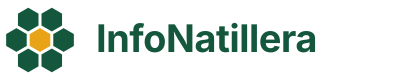

Propuestas de logo · InfoNatillera 2027
Verde pino #14573D y dorado caléndula #E8A317 sobre blanco. Cada símbolo se muestra a 256, 64 y 32 px, en positivo y en negativo.
Propuesta 1 · Brote
Una moneda que deja crecer un brote: el ahorro de todos, cuidado turno a turno, se vuelve crecimiento.
simbolo · horizontal · una tinta · negativo


Propuesta 2 · Colmena
Siete celdas ordenadas trabajando juntas; la celda dorada es la persona del turno. Comunidad que se turna.


simbolo · horizontal · una tinta · negativo


Propuesta 3 · Anillo del turno
La "i" de InfoNatillera dentro de una ronda abierta que sigue girando; el punto es la moneda del turno.
simbolo · horizontal · una tinta · negativo


Comparar con Gemini
Pegar aquí las imágenes generadas para compararlas en la mesa directiva.
Propuesta Gemini 1
Propuesta Gemini 2
Propuesta Gemini 3